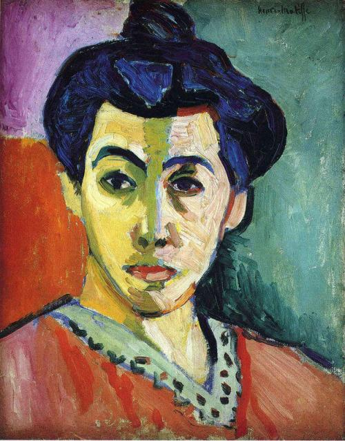
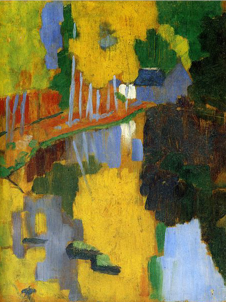
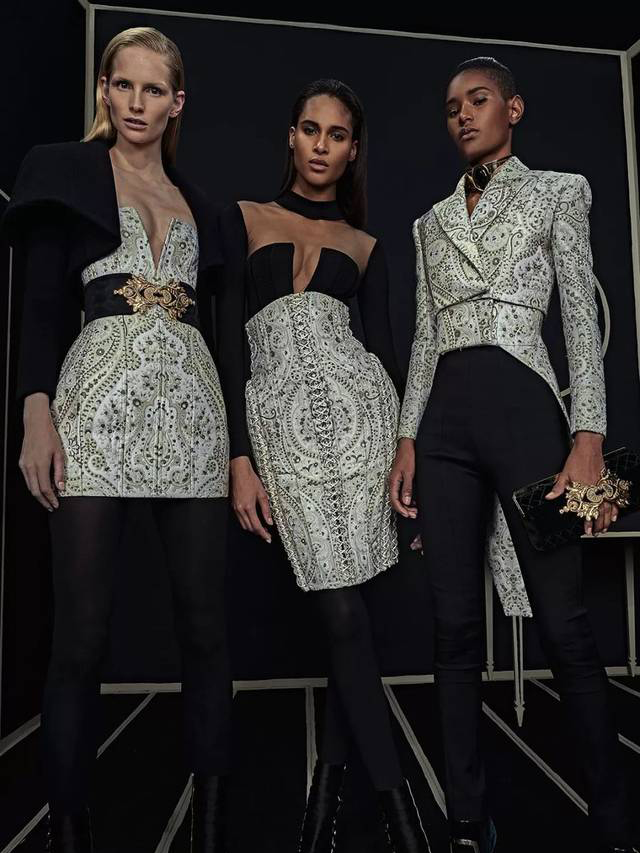
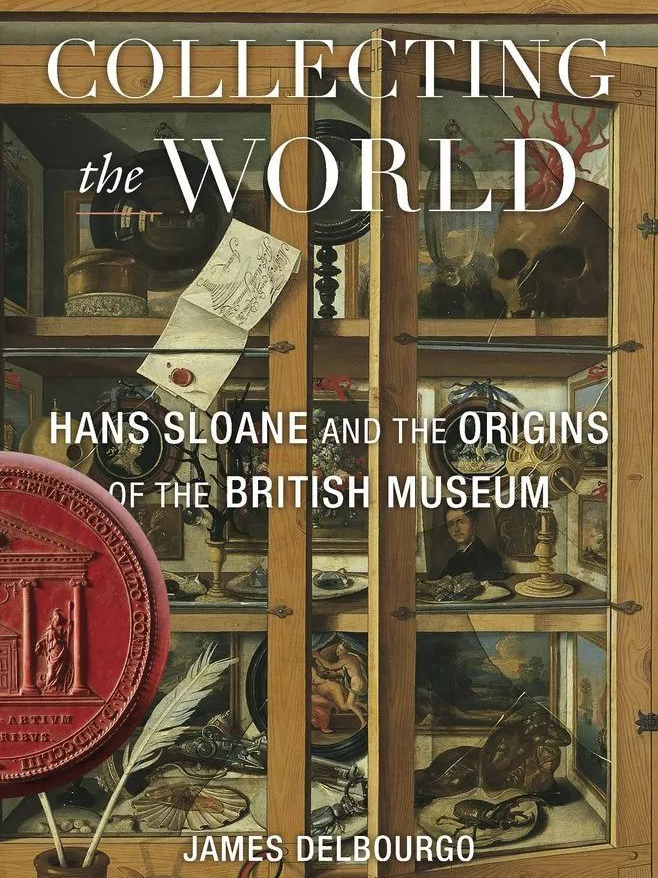
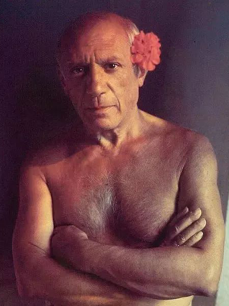
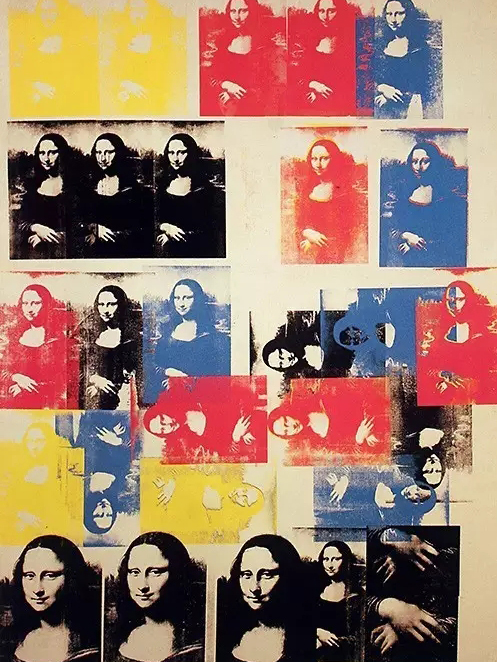
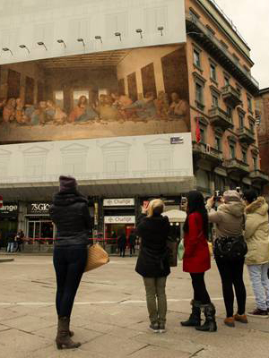
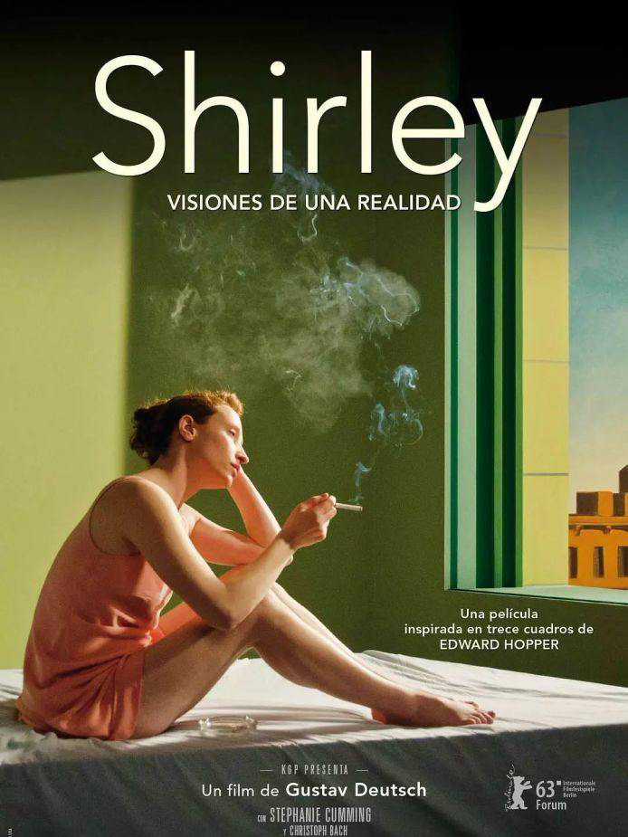
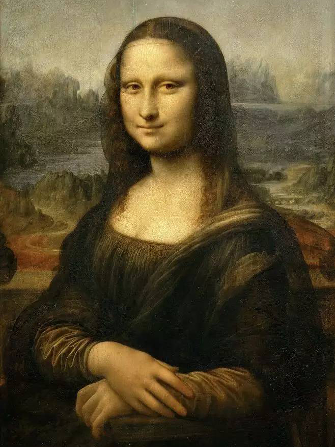

艺术专题

每日精选|| 0718
超现实主义美术画派———精神世界中的真实与荒诞
超现实主义（Surrealism）是跨越文学和艺术的各种体裁的、含有普遍意义的文艺和文化思潮。在1924年之前，它的主要阵地在法国的首都巴黎。
1919-1924年为第一阶段，基本上与达达主义平行，布雷东称这个时期为“直觉的时期”
1924-1936年为第二阶段，即按照自己的原则行动的时期，达达主义已经消亡，布雷东称这个时期为“推理的时期”。
>>了解更多
本周>> 0715
意大利表现主义画家莫蒂里安尼的“无眼女神”
莫蒂里安尼受到十九世纪末期新印象派、非洲艺术、立体主义等艺术流派和雕刻的影响，创作出以椭圆体和曲线户型为特色的优雅人物肖像画， 成为表现主义画派的代表艺术家之一。
>>了解更多

往期精选
野兽派绘画领袖人物——亨利·马蒂斯
在1905年巴黎的画展上，一群画家展出的风格奔放随意、无拘无束的作品，被一位评论家贬斥为“野兽派”， 也是现代美术史上第一个正式画派...
加入会员解锁更多精选内容，成为艺术弄潮儿！
更多艺术专辑
Gallery
历史精选
流派衍变、冷知识大全

从纳比派到野兽派：
现代意识的出现
#杂谈 #艺术史

穷奢极欲的巴洛克
风格古典服饰
#流派起源 #文艺风潮 #时尚圈

没有「朋友圈」的文兴时期
如何高逼格晒品味？
#博物馆 #好奇心橱窗

鬼知道我经历了什么！
蒙克《呐喊》的6个冷知识
#爱德华·蒙克 #搞怪素材

靛蓝的世界
#色彩的故事 #星夜

艺术史上罕见的天才
皮兹皮兹～毕加索
#巴勃罗·毕加索

作假、邋遢、自杀式表演……
艺术家的这些行为你理解吗
#行为艺术 #米开朗基罗

动辄上亿...
名画为啥这么贵？
#艺术的逻辑 #马太效应

为什么艺术家都是猫奴？
#八卦 #经典照片大公开

看死亡天使如何成为抢镜王
#象征主义

古典主义与现代城市
——油画级广告
#街头艺术 #户外广告

虚无、颠覆、反叛...
达达主义的“反艺术”
#塞尚肖像 #拼贴

提升审美必看的5部艺术电影
#场景复原 #私藏影单

还敢相信自己的眼睛吗
蒙娜丽莎到底在笑什么？
#身份猜想 #名画揭秘

西斯廷教堂绘画
竟是赌气之作
#壁画 #米开朗基罗 #韧性名作
© Copyright 2020 Muzex. All Rights Reserved